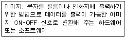

전자출판기능사 (2011-07-31 기출문제)
1과목: 출판론
1. 다음 중 레이저광을 사용하여 이음새가 없어 벽지나 날염 인쇄시 가장 적합한 제판법은?
- 엔드리스(endless)제판
- 다층 제판
- PS 제판
- 직·간접 제판
(정답률: 65%)

2. 출판기획은 특정한 출판물을 만들어 내기 위한 최초의 의도적 과정으로써 어떤 유형의 출판물을 낼 것인가를 사전에 설계하는 작업이다. 다음 중 가장 먼저 해야 할 일은?
- 원고를 얻는 일
- 제작비를 산출하는 일
- 영업·판매방법을 계획하는 일
- 기획안을 작성하여 필자를 선정하는 일
(정답률: 85%)
3. 다음 중 출판물 유통전산화에 따른 국제표준도서번호를 나타낸 것은?
- ISBN
- ISSN
- IPA
- IMT-2000
(정답률: 79%)
4. 다음 중 출판의 역사에 있어 인쇄술의 발달 순서를 올바르게 나열한 것은?
- 금속활자→목판인쇄→석판인쇄기
- 석판인쇄기→금속활자→목판인쇄
- 목판인쇄→금속활자→석판인쇄기
- 목판인쇄→석판인쇄기→금속활자
(정답률: 67%)
5. 다음 중 역사적으로 살펴본 출판과 인쇄 기술에 대한 설명이 잘못 연결된 것은?
- 무구정광대다라니경 : 현존하는 가장 오래된 목판 인쇄물
- 팔만대장경 : 고려시대 호국불교의 바탕으로 만들어진 활판 인쇄물
- 금강반야바라밀경 : 중국에서 가장 오래된 현존 목판 인쇄물
- 한성순보 : 대한민국최초의 신문이며 활판 인쇄물
(정답률: 66%)
6. 다음 중 비닐로 책의 표지를 제작하는 방식으로 사전류, 성경책, 다이어리 등의 제작에 사용되며, 투명한 비닐 커버를 주머니처럼 만들어 표지를 끼우는 방식과 비닐 표지와 면지를 붙이는 방식이 가장 많이 사용되는 제책방식은?
- 스프링 제책
- 고주파 제책
- 호부장 제책
- 트윈링 제책
(정답률: 70%)
7. 다음 중 스크린 인쇄판 빛쬠 후 판을 현상할 때 판의 비화선부 일부가 벗겨져 나가는 원인과 가장 관계가 먼 것은?
- 불량한 감광액의 사용
- 감광액이 두껍게 도포
- 빛쬠 과다
- 빛쬠 부족
(정답률: 67%)
8. 다음 중 A색의 먼셀기호가 “5Y 8/13.5"라면 이때 명도를 나타내는 것은?
- 5
- 8
- 5Y
- 13.5
(정답률: 82%)
9. 출판물 제작에 사용되는 용지의 거래단위는 연(Ream)이다. 다음 중 1연의 전지 장수로 옳은 것은?
- 100장
- 200장
- 250장
- 500장
(정답률: 73%)
10. 다음 중 제책시 책의 표면가공 처리방법이 아닌 것은?
- 셀룰로이드 입히기
- 비닐필름 입히기
- 왁스칠
- 면지 붙이기
(정답률: 84%)
11. 다음 중 출판물처럼 다품종소량생산 상품에서 흔히 볼 수 있는 판매방식으로 팔다 남은 제품을 언제든지 자유롭게 반품할 수 있는 거래 제도는?
- 매절제
- 정가 판매제
- 재판매가격 유지제
- 반품조건부 위탁판매제
(정답률: 90%)
12. 다음 중 잡지에 관한 설명으로 적절하지 않은 것은?
- 잡지는 발행 간격에 따라 주간지, 격주간지, 월간지, 계간지 등으로 나눈다.
- 잡지는 신문과 달라서 제본된 간행물의 형태를 띠며, 필요한 사람이 찾는 고급 매체라는 특징이 있다.
- 잡지는 정기적으로 꾸준히 발간해야 하기 때문에 설립이 가장 어려운 매체의 하나이다.
- 비정기 간행물인 서적의 출판에서는 일관된 통일성이 중시된다면, 정기간행물인 잡지에서는 다양성이 중시된다.
(정답률: 49%)
13. 다음 중 볼록판 인쇄의 특징이 아닌 것은?
- 원판으로부터 쉽게 판을 만들 수 있다.
- 평압, 원압, 윤전인쇄 방식에 이용 가능하다.
- 화선의 박력이 없어 정교한 인쇄에 적합하지 않다.
- 인쇄물의 뒷면에 약간의 자국이 남는다.
(정답률: 64%)
14. 컬러 원고 중 마젠타(Magenta)색을 사진적인 방법에 의한 색 분해를 하려고 할 때 사용되는 색 필터는?
- 노랑(Yellow) 필터
- 파랑(Blue) 필터
- 빨강(Red) 필터
- 녹색(Green) 필터
(정답률: 44%)
15. 다음 중 출판기획에 관한 내용으로 적절하지 않은 것은?
- 독자 대상의 명확한 설정
- 시대의 변화와 무관한 기획
- 타인이 출판하지 않은 창의적인 기획
- 적시성(timing)을 고려한 기획
(정답률: 84%)
16. 다음 중 인쇄 준비 작업에서 급유작업을 하는 이유로 가장 적절한 것은?
- 기계의 마찰력을 감소시킨다.
- 기계가 산화되는 것을 도와준다.
- 기계의 표면을 미끄럽게 한다.
- 기계의 온도가 올라가는 것을 도와준다.
(정답률: 70%)
17. 다음 중 책의 한 가운데를 실이나 철사로 맨 다음 삼면 다듬 재단하는 제책 방식은?
- 양장 제책
- 반양장 제책
- 무선철 제책
- 중철 제책
(정답률: 73%)
18. 다음 중 각 매체의 주된 기능적 특성을 연결한 것으로 적절하지 않은 것은?
- 신문 - 보도 기능
- 잡지 - 해설 기능
- TV - 오락 기능
- 책 - 환경감시 기능
(정답률: 79%)
19. 다음 중 사진이나 일러스트레이션을 설명하는 해설문을 무엇이라 하는가?
- 주(note)
- 캡션(caption)
- 헤드라인(headline)
- 일러두기(explanatory notes)
(정답률: 91%)
20. 잡지의 표현 기법 중 가장 많이 채택되는 사진의 소재로 독자에게 소구력을 가지게 하는 순서를 올바르게 나열한 것은?
- 인물>동물>정물>풍경
- 정물>동물>인물>풍경
- 동물>인물>정물>풍경
- 풍경>인물>정물>풍경
(정답률: 73%)
2과목: 전자 출판
21. 다음 중 인간 커뮤니케이션의 기술적 전환을 그 역사적 순서대로 올바르게 나열한 것은?
- 문자의 발명→인쇄기술의 발명→방송의 출현→전신기술의 출현
- 문자의 발명→전신기술의 출현→인쇄기술의 발명→방송의 출현
- 문자의 발명→인쇄기술의 발명→방송의 출현→컴퓨터 혁명
- 문자의 발명→방송의 출현→컴퓨터 혁명→인쇄기술의 발명
(정답률: 58%)
22. 다음 중 전자 출판물에 포함되지 않는 것은?
- CTS
- DVD-ROM
- CD-ROM
- e-book
(정답률: 88%)
23. 다음 중 패키지형과 온라인형 전자출판의 공통점으로 볼 수 없는 것은?
- 정보가 디지털 방식으로 저장된다.
- 컴퓨터 매체로 인해 발생한 출판 형태이다.
- 멀티미디어화 된 정보를 수록하고 전달할 수 있다.
- 정보 생산자와 수용자간 쌍방향적 교류가 자유롭게 이루어진다.
(정답률: 82%)
24. 다음 중 전자책 문서표준이 아닌 것은?
- OEB PS
- EBKS 1.0
- JepaX
- PDA
(정답률: 57%)
25. 다음 중 저장 용량이 가장 큰 매체는?
- ZIP DISK
- CD-ROM
- FLOPPY DISK
- DVD-ROM
(정답률: 78%)
26. 다음 중 비트맵 방식의 프로그램에서 화면을 구성하는 최소 단위로 더 이상 나눌 수 없는 점을 일컫는 것은?
- 도트(dot)
- 픽셀(pixel)
- 사이트(site)
- 폰트(font)
(정답률: 87%)
27. 다음 중 CD-ROM과 같은 패키지형 전자출판물의 특징이 아닌 것은?
- 모든 정보가 전자적으로 기록되어 있다.
- 내용을 보기 위해서는 특정의 전자 장치가 필요하다.
- 포맷 방식에 상관없이 어떤 컴퓨터에서도 볼 수 있다.
- 새로운 기술의 개발에 따라 새로운 표준이 생겨나게 되면, 기존의 기술과 전자장치는 쇠퇴하게 된다.
(정답률: 78%)
28. 다음 중 인쇄물에서 컬러의 표현은 어떤 색들의 혼합으로 만들어지는가?
- Gray scale
- LAB color
- CMYK color
- RGB color
(정답률: 81%)
29. 다음 중 라이센스(license) 잡지에 관한 설명으로 틀린 것은?
- 외국의 유명잡지 등과 계약하여 로열티를 지불하는 잡지를 말한다.
- 주로 세계적 권위를 가진 여성지, 시사지, 기타 대중적 지명도가 높은 유명잡지가 많다.
- 잡지 제호는 외국 유명잡지를 쓰지만 잡지 기사는 모두 한국적인 내용으로 채워진다.
- 국내 잡지시장에서 점유율이 높은 편이다.
(정답률: 80%)
30. 다음 중 색채의 중량감을 좌우하는 것은?
- 색상
- 명도
- 채도
- 포화도
(정답률: 70%)
31. 다음 중 디스크 책에 관한 설명으로 틀린 것은?
- 멀티미디어가 가능하다.
- 반영구적으로 보관할 수 있다.
- DVD-ROM 한 장에 종이책 수백 권의 내용을 저장할 수 있다.
- DVD-ROM으로 제작된 디스크 책은 독자가 수정을 자유롭게 할 수 있다.
(정답률: 90%)
32. 다음 중 인쇄출판에 사용하기에 가장 적합하지 않은 디지털 폰트는?
- 트루타입
- 포스트스크립트
- 타입 1
- 비트맵
(정답률: 70%)
33. 다음 중 전자통신출판에 대한 설명으로 옳지 않은 것은?(오류 신고가 접수된 문제입니다. 반드시 정답과 해설을 확인하시기 바랍니다.)
- 멀티미디어적 정보를 제공할 수 있다.
- 종이책과 비교하여 보관은 용이하나, 보존력이 약하다.
- 정보의 선택은 장점으로 작용하지만 쌍방향 정보교환이 불가능하다.
- 신속한 정보제공과 정보전달이 가능하지만 수정은 전혀 불가능하다.
(정답률: 26%)
34. 다음에서 설명하는 내용과 가장 관련 있는 용어는?

- 현상기
- 립(RIP)
- OPI 서버
- 이미지세터
(정답률: 64%)
35. 다음 중 DTP시스템에 활용되는 응용프로그램이 아닌 것은?
- Adobe Photoshop
- QuarkXpress
- PageMaker
- Dreamweaver
(정답률: 50%)
36. 다음 중 무채색에 대한 설명으로 틀린 것은?
- 채색이 없는 물체색의 총칭이다.
- 색상과 채도가 없고, 명도만으로 구별된다.
- 채도가 100인 상태의 흰색, 회색, 검정색이다.
- 색자극에 대해서는 동일한 에너지 스펙트럼의 색이 사용된다.
(정답률: 74%)
37. 다음 중 전자통신출판의 기반이 되는 인터넷의 일반적 특성과 어울리지 않는 것은?
- 세계적으로 정보를 공유할 수 있다.
- 정보의 신속한 갱신이 가능하다.
- 정보의 유통 통제가 용이하지 않다.
- 정보의 즉각적인 배포가 용이하지 않다.
(정답률: 86%)
38. 다음 중 종이책 전자출판을 목적으로 하는 경우에 해당하는 것은?
- WEBZINE
- CD-I
- e-book
- DTP
(정답률: 56%)
39. 다음 중 멀티미디어의 특징으로 볼 수 없는 것은?
- 정보의 디지털화
- 정보이용의 상호 작용성 혹은 쌍방향성
- 하나의 단말기로 다양한 정보형태의 통합적 처리
- 문자를 배제한 소리, 영상, 그래픽으로 정보 제공
(정답률: 83%)
40. 다음 중 DTP(Desk Top Publishing)에 관한 설명으로 가장 적절한 것은?
- 컴퓨터를 이용하여 원고 작성, 교정, 인쇄용 필름 출력 등의 작업을 처리하는 방식을 말한다.
- 원고의 작성과 교정은 컴퓨터로 하고 인화지로 출력하는 것을 말한다.
- 원고의 작성은 컴퓨터로 하고 수작업의 대지작업을 거쳐 오프셋 인쇄를 하는 것을 말한다.
- 원고의 교정은 컴퓨터로 하고 인화지를 대지에 배치하여 인쇄하는 것을 말한다.
(정답률: 77%)
3과목: 전산 편집
41. 다음 중 판(版)과 쇄(刷)의 설명으로 가장 적절한 것은?
- 잡지는 발매시 초판과 재판을 동시에 진행한다.
- 오자나 탈자 등 극히 부분적인 정정을 했을 때에도 판의 수가 늘어난다.
- 판의 수가 많을수록 발행부수도 많다.
- 미미한 정정의 영역을 넘어 저작 내용이 변경되는 등의 개정이 원판에 가해졌을 때에도 판의 수가 늘어난다.
(정답률: 61%)
42. 다음 중 교정부호 “V"의 의미로 가장 적절한 것은?
- 사이 붙이기 표시
- 사이 띄우기 표시
- 위치 바꾸기 표시
- 삭제 표시
(정답률: 94%)
43. 다음 중 출력 선수(lpi)와 해상도(lpi)에 관한 설명으로 틀린 것은?
- 출력장치의 해상도(dpi)는 망점을 만드는 하프톤 셀의 개수로 표현한다.
- 디지털 이미지의 해상도(dpi)는 ppi로도 나타내며, 선수(lpi)와 해상도(dpi)는 상호 보완적 용어이다.
- 필름 출력기는 레이저 프린터에 비해 단위면적당 해상도(dpi)가 낮아 선명한 망점이 나온다.
- 선수(lpi)는 출력선수의 단위로 1평방인치 안에 하프톤 도트가 몇 개 들어 있는가를 의미한다.
(정답률: 74%)
44. 다음 중 헤드라인(headline)에 관한 설명과 가장 거리가 먼 것은?
- 사진이나 일러스트레이션을 설명하는 해설문이다.
- 독자가 특정 부분을 찾는데 도움을 준다.
- 신문·잡지 등에서 기사의 처음에서 내세우는 큰 표제를 뜻하기도 한다.
- 독자의 주의를 끌기 위해 1단계 또는 그 이상의 큰 글자를 사용하기도 한다.
(정답률: 67%)
45. 분리의 금칙사항 중 글꼬리에 오는 것이 금지되는 것이 아닌 것은?
- :
- 『
- 「
- (
(정답률: 80%)
46. 다음 중 채도가 가장 높은 색을 무엇이라 하는가?
- 단색
- 혼색
- 탁색
- 순색
(정답률: 83%)
47. 다음 중 컬러 사진 및 슬라이드 필름 원고를 디지털 이미지화하기 위해 5000 ~ 수만 dpi의 해상도로 입력할 수 있는 장치의 이름은?
- 드럼 스캐너
- 평판 스캐너
- 디지털 카메라
- 필름 카메라
(정답률: 63%)
48. 다음 중 모니터에 사용되는 기본적인 빛의 삼원색을 올바르게 나열한 것은?
- CMK
- CMY
- RGB
- MYK
(정답률: 93%)
49. 다음 중 컬러 교정에 관한 설명으로 가장 적절한 것은?
- 컬러교정은 색상이 제대로 표현되었는지 확인하기 위해 꼭 거쳐야 할 단계이다.
- 색상은 늘 같은 분해 과정을 거치기 때문에 컬러교정은 반드시 거치지 않아도 된다.
- 컬러 교정은 4도로 출력된 필름 상으로 보는 교정을 말한다.
- 컬러 교정은 실제의 지질을 사용한 (컬러) 레이저프린터의 결과물로도 가능하다.
(정답률: 79%)
50. 다음 중 타이포그래피(typography)의 정의로 가장 적절한 것은?
- 오퍼레이터가 컴퓨터의 화면을 통해 그 내용을 확인해 가면서 문자를 포함한 각종 원고의 내용을 입력하는 것
- 시각전달의 목적을 달성하기 위하여 조형미를 추구하면서 효과적인 문자, 사진, 삽화 등을 구성하고 배열하는 것
- 문자의 크기, 글줄 길이, 행간, 자간, 띄어쓰기, 조판의 형태 등을 디자인하여 조판의 미를 이루도록 하는 것
- 서로 조화롭게 하기 위하여 일정한 간격으로 수평, 수직선을 그어 만든 일종의 조직망으로, 문자, 그림, 사진 등을 배치하는 것
(정답률: 77%)
51. 다음 중 원고가 입수되고 편집자가 원고의 내용을 충분히 검토한 다음, 전체적으로 통일되고 일관되게 편집을 진행하기 위한 작업을 무엇이라 하는가?
- 판형 정하기
- 목차 정하기
- 레이아웃 정하기
- 표제지와 판권위치 정하기
(정답률: 77%)
52. 다음 중 종이의 규격인 평량을 뜻하는 단위는?
- turn
- lpm
- g/㎡
- g
(정답률: 80%)
53. 다음 중 인터넷에 존재하여 웹브라우저 상에서 볼 수 있는 파일 형식으로만 나열된 것은?
- psd, ai
- jpg, ai
- psd, gif
- jpg, gif
(정답률: 86%)
54. 다음 중 노랑의 보색으로 옳은 것은?
- 남색
- 자주
- 초록
- 빨강
(정답률: 77%)
55. 다음 중 광원에 관한 설명으로 옳은 것은?
- 지각 가능한 가장 긴 파장은 보라이다.
- 빛은 눈에 보이지 않는 에너지이다.
- 파랑의 파장은 610~590nm이다.
- 인간의 눈은 약 380nm에서 780nm사이의 빛의 파장을 지각할 수 있다.
(정답률: 74%)
56. 다음 중 컬러이미지를 필름으로 출력했는데 4색으로 출력되지 않고 흑백으로 나왔을 때의 원인으로 가장 적절한 것은?
- 이미지 데이터가 유실됐다.
- 이미지 모드가 RGB 상태였다.
- 출력소에서 지원되지 않는 서체였다.
- 그림상자 지정에서 출력방지 체크가 돼 있었다.
(정답률: 69%)
57. 다음 중 세리프(serif)에 대하여 가장 옳게 설명한 것은?
- 글자의 가로나 세로 끝부분에 붙어있는 획(돌기)을 말한다.
- 글자 중에 닫힌 부분이나 움푹한 공간을 의미한다.
- 손 글씨와 비슷하게 쓴 글자를 말한다.
- 글자체를 기울여서 쓴 것을 말한다.
(정답률: 88%)
58. 다음 중 문자의 레이아웃과 크기에 대한 설명으로 적절하지 않은 것은?
- 문자를 레이아웃 할 때에는 제목, 리드, 본문, 발문, 필자명, 페이지 숫자 등이 지면에 들어갈 수 있음을 고려해야 한다.
- 문자의 크기는 글줄 길이에 따라 많은 변화를 줄 수 있다.
- 문자의 크기는 인쇄물의 내용이나 성격 등에 따라 변하는 것이 아니라, 인쇄물의 크기에 따라서 변화시켜야 한다.
- 캡션이나 도표의 내용 등의 문자는 일반적으로 본문의 문자보다 작은 크기로 하는 것이 좋다.
(정답률: 80%)
59. 다음 중 감법혼색을 옳게 나타낸 것은?
- 시안(cyan) + 마젠타(magenta) = 파랑(blue)
- 마젠타(magenta) + 노랑(yellow) = 검정(black)
- 파랑(blue) + 녹색(green) = 마젠타(magenta)
- 파랑(blue) + 빨강(red) = 시안(cyan)
(정답률: 69%)
60. 한글 기본 서체의 글 구성에서 행간의 기본 값은 채택한 본문 글자의 50%이다. 본문의 글씨가 신명조 20pt일 때 행송과 행간 값은 각각 얼마인가?
- 행송: 25pt, 행간: 10pt
- 행송: 30pt, 행간: 10pt
- 행송: 30pt, 행간: 15pt
- 행송: 25pt, 행간: 15pt
(정답률: 65%)